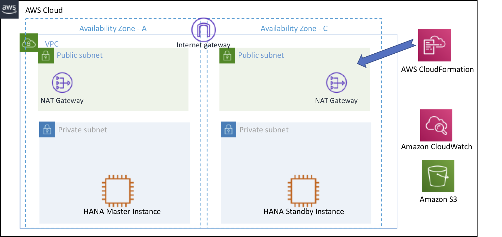

Lab 01. Setup S4HANA Cluster
Lab 설명
S4HANA Quick Starts를 이용하여 S4HANA High Availability Architecture를 손쉽게 구성합니다.
Lab Architecture

사전작업 : Key Pair 생성
HANA Database 및 Application Servers 에 접속하기 위한 Key Pair 를 생성 합니다.
- AWS Management Console에 로그인 한 뒤 Key Pairs Console 서비스에 접속합니다.
- Create key pair 버튼을 누릅니다.

- Name은 SAP-ImmersionDay-Lab 라고 입력 후 Create key pair 버튼을 누릅니다.
- 이번 WorkShop은 Session Manager를 통해 EC2 인스턴스에 접속할 예정입니다. 다운로드 된 키는 안전한 위치에 보관합니다.

S4HANA Quick Starts 접속
Lab 전체에서 사용할 S4HANA 를 설치합니다. Quick Starts for S4HANA 는 설치를 위한 다양한 옵션이 있습니다. 본 실습은 새로운 VPC에 HANA Database를 Multi-AZ 기반으로 구성하고, 접속을 테스트를 위한 ASCS, PAS를 각각 1대씩 설치합니다. Quick Starts for S4HANA에 대한 자세한 사항은 옆 링크를 참고하시기 바랍니다.(S4HANA on AWS : Quick Starts Deployment Guide)
-
AWS Management Console에 로그인 한 뒤 Quick Starts for S4HANA 서비스에 접속합니다.
-
리전을 Asia Pacific(Seoul) 로 변경합니다. 그리고 Next 버튼을 선택합니다.

-
Stack name은 이전에 사용했던 name과 동일하지 않는한 변경하지 않습니다.
-
Step2.Specify stack details 은 S4HANA 설치를 위한 VPC, SAP HANA, SAP S/4HANA ABAB Cluster 설정 옵션을 입력하는 단계입니다.
-
Step2.1 VPC network configuration 은 VPC 설정 옵션을 아래와 같이 업데이트 합니다.
- Availability Zones(선택) : ap-northeast-2a, ap-northeast-2c
- VPC CIDR : 10.0.0.0/16
- Private subnet 1 CIDR : 10.0.1.0/24
- Private subnet 2 CIDR : 10.0.2.0/24
- Public subnet 1 CIDR : 10.0.11.0/24
- Public subnet 2 CIDR : 10.0.12.0/24

-
Step2.2 SAP HANA database server and storage configuration 은 SAP HANA Database 설정 옵션을 아래와 업데이트 합니다.
- Implement HANA for High Availability(선택) : Yes
- SAP HANA server host name : s4hdbmas
- SAP HANA HA server host name for Secondary node (i.e. siddbsec) : s4hdbsec
- SAP HANA database host count : 2
- HANA database system ID : S4H
- SAP HANA DB & S/4HANA ABAP password : Init12345
- S3 bucket for HANA database software : ( e.g s3://sap-immsersionday-hol1/hanadb/ )
- SSH key pair(선택) : SAP-ImmersionDay-Lab


-
Step2.3 SAP HANA database server and storage configuration 은 SAP S/4HANA ABAP cluster 설정 옵션을 아래와 업데이트 합니다.
- Route 53 private hosted zone : awssap.co.kr
- EFS for /sapmnt(선택) : Yes
- SAP ASCS server virtual name : s4hasc00
- SAP ASCS instance type : r5.xlarge
- SAP PAS server host name : s4hpas00
- PAS EC2 automatic recovery(선택) : No
- S3 bucket for SAP S/4HANA software : (e.g sap-immsersionday-hol1)
- S3 key prefix for SAP S/4HANA software : (e.g quickstart-sap-s4-hana)


-
Step2.4 SAP S/4HANA Additional Application Server setup and configuration AAS 서버는 사용하지 않을 계획이므로 Skip 합니다
-
Step2.5 Optional configuration RDP 및 Bastion 설정은 Lab02에서 다룰 예정이므로 No 로 변경합니다.
-
Step2.5 AWS Quick Start configuration 은 Default 설정을 사용합니다 Next 버튼을 선택합니다.

-
Step3.Configure stack options 은 Stack 실행 옵션을 설정하는 단계 입니다.
-
Error 발생 시 원활한 Trouble Shooting을 위해 Rollback 옵션을 Disabled 로 변경합니다. 그리고 Next 버튼을 선택합니다.

-
Step4.Review 은 이전 설정을 확인하는 단계 입니다. 제일 하단 Capabilities 의 두 체크 Box를 선택 후 Create stack 버튼을 선택합니다.

-
SAP-S4-HANA 스택이 생성 되었습니다. Status가 CREATE_COMPLETE 가 될 때 까지 기다립니다.

Error 가 발생했을 경우 진행하고 있는 Solutions Architect에게 문의 합니다.
Lab01 실습이 종료 되었습니다. 다음은 Lab02를 진행합니다.